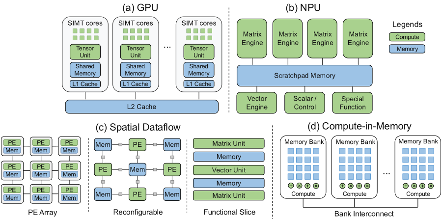

Core Taxonomy: Four Classes of AI Accelerator Architecture
Specialized accelerators deliver substantially more throughput and better energy efficiency than general-purpose CPUs on AI workloads, but they do not all get there the same way. Four categories cover the dominant designs, separated by their primary execution and data-movement model — not by vendor, and not by which operations they happen to support.
| Category | Computer architecture | Representative platforms |
|---|---|---|
| GPU | General-purpose SIMT architecture with dedicated tensor/matrix units | NVIDIA GPU, AMD GPU |
| NPU | Heterogeneous domain-specific architecture combining matrix, vector and scalar engines around a shared on-chip scratchpad | Google TPU, AWS Trainium/Inferentia, Qualcomm Cloud AI, Huawei Ascend, Intel Gaudi, Microsoft Maia, Cambricon MLU |
| Spatial dataflow | Computation graph mapped onto distributed compute, memory and communication resources, in three styles: PE array, reconfigurable fabric, functional-slice streaming | PE array: Tenstorrent, Meta MTIA, Tesla Dojo, Graphcore IPU, Cerebras; reconfigurable: SambaNova; functional-slice: Groq |
| Compute-in-memory | Memory-centric architecture integrating compute logic in or near SRAM or DRAM to reduce data movement | d-Matrix, SK hynix AiM, Samsung PIM |

Each category exploits a different property of AI workloads: increasing data reuse, specializing compute resources, or improving data locality. Designs in the same category still differ in supported operations, memory organization, and how much of the chip stays general-purpose. GPUs keep SIMT cores beside their matrix units; NPUs such as Google TPU and AWS NeuronCore pair specialized matrix engines with vector, scalar or SIMD execution [1, 2, 3, 4]. Memory systems mix the same way, combining hardware-managed caching with software-managed storage for explicit reuse.
So the useful question is not what an accelerator is called. It is which computations and which data movements receive dedicated hardware support, and which are left to general-purpose hardware or to software. Each platform below is assigned a primary category by its dominant execution and data-movement model, while acknowledging that secondary mechanisms — systolic execution, compiler-managed placement, near-memory arithmetic — cut across categories.
| Category | Accelerator | Compute engines | Memory | Scale-up topology |
|---|---|---|---|---|
| GPU | NVIDIA GPU | SIMT + tensor cores | HBM | Hybrid cube mesh / switched all-to-all |
| GPU | AMD GPU | SIMT + matrix cores | HBM | Direct full mesh / switched all-to-all |
| NPU | Google TPU | Matrix + vector + scalar + SparseCores + collectives acceleration (TPU 8i) | HBM | 2D / 3D torus; Boardfly |
| NPU | AWS Trainium | Matrix + vector + scalar + programmable SIMD | HBM | 2D torus; switched all-to-all |
| NPU | Qualcomm Cloud AI 100 | Matrix + vector + VLIW scalar units | LPDDR | — |
| NPU | Huawei Ascend | Matrix + vector + scalar units | HBM | UB-Mesh: nD full mesh |
| NPU | Intel Gaudi | Matrix + VLIW vector units | HBM | Direct full mesh |
| NPU | Microsoft Maia | Matrix + vector units | HBM | Switched Ethernet |
| NPU | Cambricon MLU | Matrix + vector + scalar units | LPDDR / HBM | — |
| Spatial | Tenstorrent | RISC-V cores + matrix/vector units | GDDR6 | 2D mesh Ethernet |
| Spatial | Meta MTIA | PE grid with matrix + vector units | LPDDR / HBM | Switched PCIe / switched all-to-all |
| Spatial | Graphcore | Tile processors, FP16 vector MAC + FP32 scalar FPU | DDR4 | 2D torus |
| Spatial | Tesla Dojo | Tile processors, matrix + SIMD vector + scalar units | On-chip SRAM + HBM | 2D mesh die-to-die |
| Spatial | Cerebras | Wafer-scale PE array; SIMD + scalar; data-triggered execution | On-chip SRAM | 2D mesh on-wafer |
| Spatial | SambaNova | Reconfigurable SIMD compute + memory tiles | HBM + DDR | Direct full mesh (SN40L) |
| Spatial | Groq | Matrix + vector ALUs + SRAM + switch slices, statically scheduled | On-chip SRAM | Dragonfly |
| CIM | d-Matrix | Digital in-SRAM MAC array | LPDDR5X | Switched PCIe |
| CIM | SK hynix AiM | FP16 MAC-based PIM units | GDDR6-PIM | — |
| CIM | Samsung PIM | FP16 SIMD PIM processors | HBM-PIM | — |
References
- 1.Jack Choquette. Nvidia hopper h100 gpu: Scaling performance. IEEE Micro, 2023.
- 2.Alan Smith and Vamsi Krishna Alla. AMD Instinct™ MI300X: A Generative AI Accelerator and Platform Architecture. IEEE Micro, 2025.
- 3.Norm Jouppi et al. Tpu v4: An optically reconfigurable supercomputer for machine learning with hardware support for embeddings. Proceedings of the 50th annual international symposium on computer architecture, 2023.
- 4.AWS. NeuronCore-v2 Architecture. 2026. AWS Neuron SDK 2.31.1 documentation.